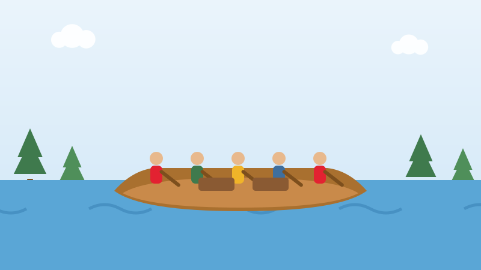

🛶 For Kids
The Men Who Paddled Sixteen Hours a Day
Long before roads, the rivers were the highways, and the voyageurs were the trucks.

Four hundred years ago, people in Europe wanted hats made of beaver fur. Beaver fur came from Canada. So a business grew up carrying furs east and goods west, and one company doing it, the Hudson's Bay Company, began in 1670.
The men who did the paddling were called voyageurs. Their big canoes were made of birchbark and were about eleven metres long, with eight to twelve paddlers in each and a load of about three tonnes.
They paddled fourteen to sixteen hours a day. They sang while they paddled, because singing keeps everybody's paddles hitting the water at the same moment.
When they reached rapids or a waterfall, they could not paddle through. So they carried everything overland to the next safe water. That is called a portage.
On a portage a voyageur carried two bundles of about forty kilograms each. That is roughly eighty kilograms on one man's back, held by a strap across his forehead, and they moved at a jog.
They did not invent any of this. The canoe, the portage routes and the tumpline all came from the First Nations peoples who had travelled those rivers for thousands of years, and who guided and taught the newcomers.
Now try three questions
No timer and no score to worry about. Every answer tells you why.
About this quiz
This story is about the voyageurs of the fur trade, who paddled huge birchbark canoes fourteen to sixteen hours a day and carried about eighty kilograms on their backs over the portages.
It is written in short sentences for children aged six to nine, with a picture drawn for this site and three questions at the end. Tap the Read aloud button and the page will read the questions out loud.